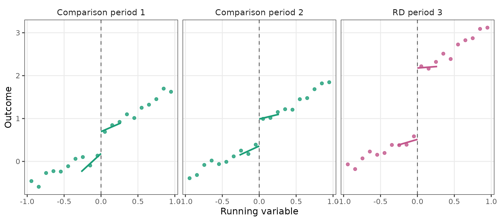
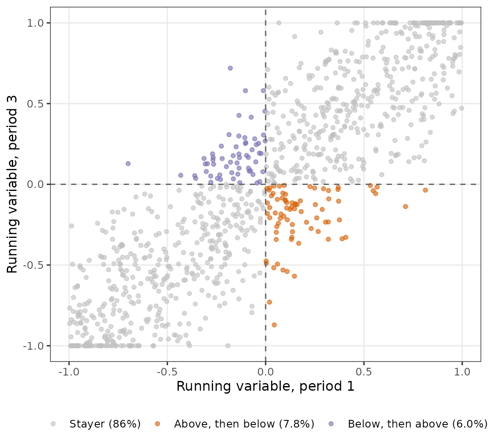
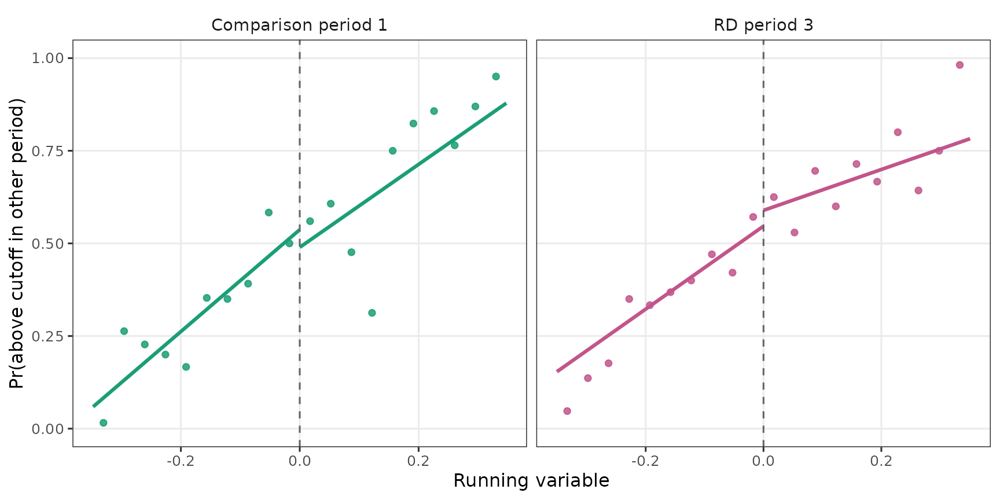
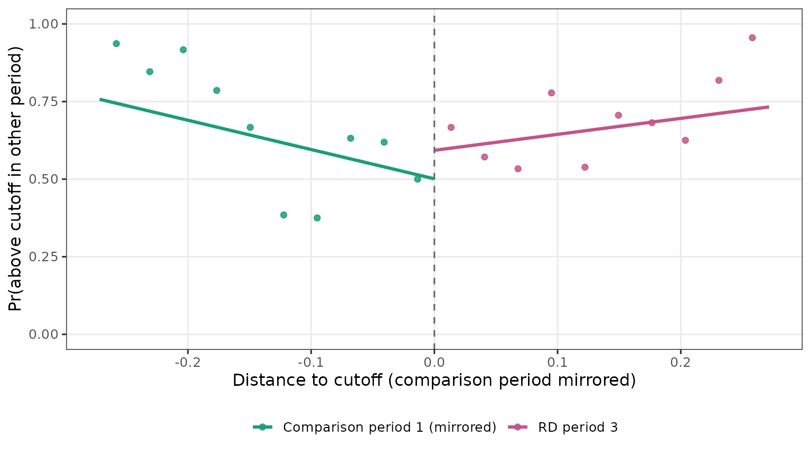
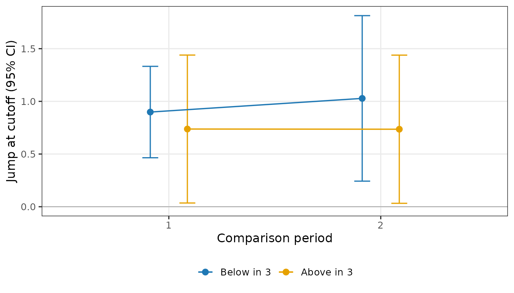
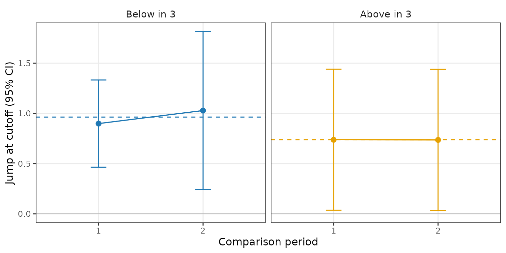
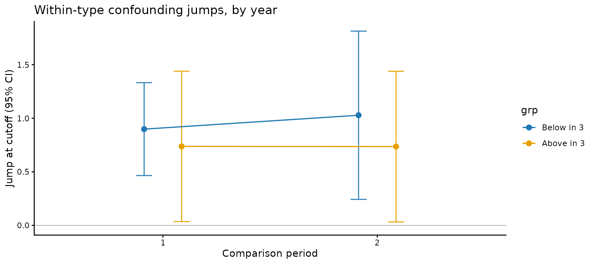

Every object the package returns can be drawn with
plot(). The pictures follow the validation figures of the
paper’s application: the local-linear fits that the estimate and the
tests are made of, shown on the data, so that a rejection (or a
non-rejection) can be read off the figure and not only off a p-value.
They are ggplot objects, so they can be changed with the usual
+ (a title, a theme, limits) and saved with
ggplot2::ggsave(). ggplot2 is only suggested by the
package; the plot functions ask for it when it is missing.
The estimate: one RD plot per period

One panel per period, in time order. The points are the outcome
averaged within 20 equal-width bins of the running variable; the two
lines are the local-linear fits on each side of the cutoff, drawn over
the bandwidth the estimate used (summary(fit) lists the
bandwidth and every jump). The vertical distance between the two lines
at the cutoff is the period’s jump
.
The RD-DID estimate is the RD-period jump minus the weighted
comparison-period jumps: here the confounding jump of about 0.5 shows up
in years 1 and 2, and the year-3 jump of about 1.5 is the effect plus
the confounding jump. The figures carry no titles or statistics by
design: the numbers are in the printed objects, and a title is one
+ labs() away (last section).
Who switches side: the running variable in two periods
plot_switchers(rddid_sim_pv, x = "R", time = "year", id = "id", periods = c(1, 3))
Each unit observed in both periods is a point; the dashed lines are
the cutoff. The units in the off-diagonal quadrants changed side of the
cutoff between the two periods: these “switchers” are what the four
tests below are about. With a running variable fixed over time
(rddid_sim) every point lies on the diagonal and the
quadrants are empty.
Type continuity
tc <- rd_typecont(rddid_sim_pv, x = "R", time = "year", id = "id", t_rd = 3)
plot(tc, comparison = 1)
The paper’s type-continuity figure, for one comparison period and the
RD period. Left panel: in the comparison period, the share of units that
are above the cutoff in the RD period, against the comparison-period
running variable. Right panel: in the RD period, the share that are
above the cutoff in the comparison period. The points are binned shares
inside the bandwidth; the lines are the local-linear fit on each side of
the cutoff, at the bandwidth rule the test used. Under the null the two
lines of a panel meet at the cutoff: who a unit is in the other period
does not jump at the cutoff. The test’s statistic is in
print(tc); with three or more periods the test uses the
full pattern of a unit’s sides in the other periods, so the picture is
the pairwise version, one pair at a time
(plot(tc, comparison = 2) draws the other pair).
Composition stability
cs <- rd_compstable(rddid_sim_pv, x = "R", time = "year", id = "id", t_rd = 3)
plot(cs)
The paper’s reflected-sample construction. The units above the cutoff
in the comparison period are placed to the left of an
artificial cutoff at their mirrored distance
;
the units above the cutoff in the RD period are placed to the
right at
.
The outcome is whether the unit is above the cutoff in the other period
of the pair; the binned share and the local-linear fit on each side are
drawn. Under the null the two lines meet at the artificial cutoff: the
units just above the cutoff are the same mix in both periods. In
rddid_sim_pv the assumption fails by construction and the
pair’s test rejects (print(cs)); with three periods that
test also uses the unit’s side in the third period, which the binary
picture does not show, so the gap here is smaller than the statistic
suggests. plot(cs, pair = 2) draws the next pair; under
estimand = "atu" the same picture is drawn for the units
below the cutoff.
Homogeneous confounding

In a comparison period the jump in the outcome at the cutoff is the
confounding jump. The plot shows that jump, estimated within each type
(by default the unit’s side in the RD period: “Below in 3” and “Above in
3”), with its 95% interval, for each comparison period. Under the null
the types’ points coincide within a period, up to sampling error. In
rddid_sim_pv the confounding jump is 0.5 for every unit, so
the two types agree in both years.
Constant within-type confounding
tr <- rd_trendcell(rddid_sim_pv, y = "Y", x = "R", time = "year", id = "id", t_rd = 3)
plot(tr)
The same within-type jumps, read the other way: one panel per type,
its jump in each comparison period, and a dashed line at the type’s
average. Under the null (trend = "constant") the points of
a panel sit on the dashed line, up to sampling error; a drift across
periods would call for rddid(trend = "linear"), and
rd_trendcell(trend = "linear") then tests whether the drift
is itself linear (three or more comparison periods are needed for
that).
Changing a plot
The functions return ggplot objects, so the usual tools apply:
plot(hg) + labs(title = "Within-type confounding jumps, by year") + theme_classic()
References
Leventer, D. and D. Nevo (2024). Correcting Invalid Regression Discontinuity Designs Using Multiple Time-Period Data. arXiv:2408.05847. https://arxiv.org/abs/2408.05847